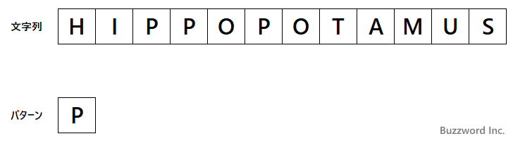
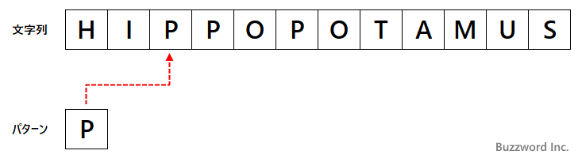
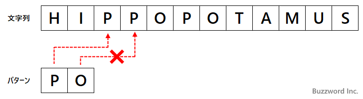
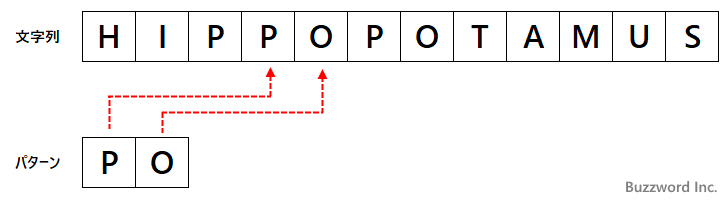
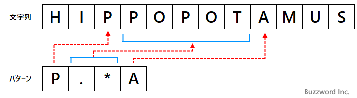
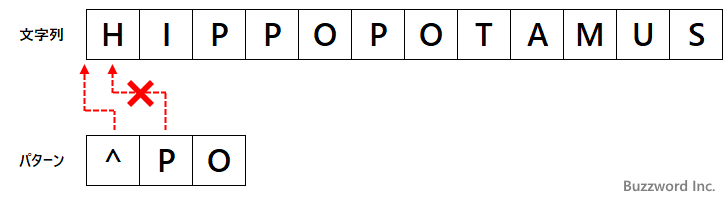

- Home ›
- 正規表現入門 ›
- 正規表現のメタ文字一覧
正規表現とは
正規表現の具体的な使い方を見ていく前に、正規表現とはどういうものなのか、そして正規表現で表現したパターンが対象の文字列に対してどのようにマッチしているのかしていないのかを判別するのかについて解説します。
正規表現とは
先ほども書きましたが正規表現とは指定した条件に一致する複数の文字列を一つのパターンで表現する方法です。指定する条件は例えば「アルファベットと数値からなる 5 文字の文字列」や「末尾が ing で終わる文字列」など目的に合わせて条件を設定します。
正規表現は大量のデータの中から正規表現のパターンに一致する文字列を検索したり、見つかった文字列を別の文字列に置換する場合などに使われます。
例えば文書の中に含まれる 2015 2016 2017 2018 2019 の 5 つの文字列を行を検索したい場合で考えてみます。正規表現ではこの 5 つの文字列を次のように表現することができます。
201[5-9]
ひとつひとつ文字列を検索するのではなく 201[5-9] とマッチする行を検索することで一度の検索で処理を完了することができます。
他にも正規表現は入力された文字列が正規表現で表現されるパターンに一致するかどうかをチェックする時などに使われます。
例えば利用者に携帯電話の電話番号を入力してもらうテキストボックスがあったとします。携帯電話の電話番号は 090-xxxx-xxxx のように 070 または 080 または 090 で始まり、4 桁の数値が 2 つ続くものです。正規表現を使うと携帯電話番号のパターンは次のように表現することができます。
^0[789]0-\d{4}-\d{4}$
先ほどよりも少し複雑な正規表現となりました。テキストボックスに入力された文字列と ^0[789]0-\d{4}-\d{4}$ がマッチするかどうかを調べることで実際に使用できる(と思われる)携帯電話の電話番号が入力されたことを確認することができます。
※ 正規表現では対象となる文字列が正規表現で表現されるパターンに当てはある場合にマッチするという表現をします。
正規表現は通常の文字とメタ文字と呼ばれる特殊な意味を持つ文字の組み合わせでパターンを作っていきます。慣れないと分かりにくいですけど、一つ一つのメタ文字の意味は明確ですので使い方だけ覚えてしまえば複雑な条件の正規表現も自由に作れるようになると思います。
正規表現のパターンがどのようにマッチするか
対象となる文字列は 1 つの単語でもいいですし、複数の単語からなる文でも構いません。単語であれば "Apple" や "東京都中央区" などですし、文であれば "Tomorrows weather is sunny" のような文となります。今回は "HIPPOPOTAMUS" という文字列を対象にしてみます。
正規表現を使ったパターンは、通常の文字と特別な意味を持つメタ文字を組み合わせたものとなります。では最初にパターンとして通常の文字だけを使った "P" とした場合に対象の文字列とマッチするのかどうかを見ています。

通常の文字は同じ文字とだけマッチします。パターン "P" は対象の文字列 "HIPPOPOTAMUS" の中の "P" とマッチするのでパターンは対象の文字列とマッチします。

次にパターンとして "PO" とした場合で考えてみます。この場合、最初に "P" とマッチし、かつ次の文字が "O" とマッチする必要があります。対象の文字列の中で最初に出てくる "P" は次の文字が "P" で "O" とマッチしません。

ただ対象の文字列の中で二番目に出てくる "P" は次の文字が "O" で "O" とマッチします。その為パターンは対象の文字列とマッチします。

次にメタ文字を使った場合も見ておきます。詳しくはこのあと解説していきますが、 ".*" というメタ文字は任意の文字の任意の個数にマッチします。パターンとして通常の文字と組み合わせて "P.*A" とした場合 "P" とマッチし任意の個数の文字が続いたあと "A" とマッチする必要があります。今回は対象の文字列とマッチしました。

メタ文字を使った場合をもう一つ。 "^" というメタ文字は文字ではなく行の先頭という位置にマッチします。パターンとして通常の文字と組み合わせて "^PO" としたっ場合、行の先頭から "P" 次に "O" とマッチする必要があります。今回は行の先頭の文字が "H" でしたのでマッチしませんでした。

対象の文字列と正規表現のパターンがどのようにマッチしているか判定しているのかお分かり頂けましたでしょうか。ではこの後で正規表現で用意されているメタ文字の一覧と使い方を一つ一つみていきます。
-- --
正規表現の基本的な考え方について解説しました。
( Written by Tatsuo Ikura )

著者 / TATSUO IKURA
初心者～中級者の方を対象としたプログラミング方法や開発環境の構築の解説を行うサイトの運営を行っています。